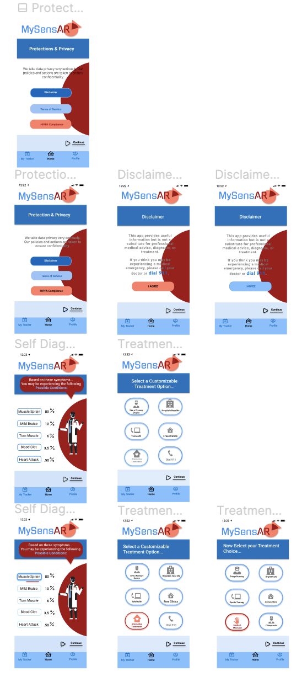
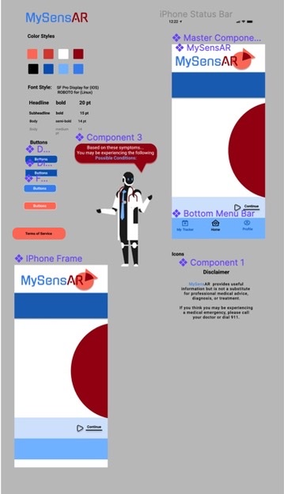

As I was researching the competition, it was discovered that we had a unique feature (augmented reality) that not even our top competitor, WebMD, offered. The Market demand is projected to skyrocket in the next few years. Afterall, the endgame is to retain users and generate income!
We focused on three distinct users which most of the population consists of: The Hippie (Hipster) - The Cost Sensitive - The Uninsured
I created a scenario of a girl who is sick in bed and is scared of going to the doctors. What is she thinking. What thoughts are going through her mind. Who does she turn to for help. Where does she go.
After creating an initial userflow or "Happy Path", we designed the first iteration and conducted user feedback.
To cover any liability, we had the first landing page our "Disclaimer".
Designed the 1st iteration using Figma. Each of us had a user from each of our Personas to test out the app. In order to get the most honest feedback, we had the users talk out loud as they are going through the functions during the recorded sessions. Dr. S. Hassam was our medical consultant who gave us very valuable feedback.
After our 2nd iteration, we conducted another user testing. Then finally, we decided on a Design System.
